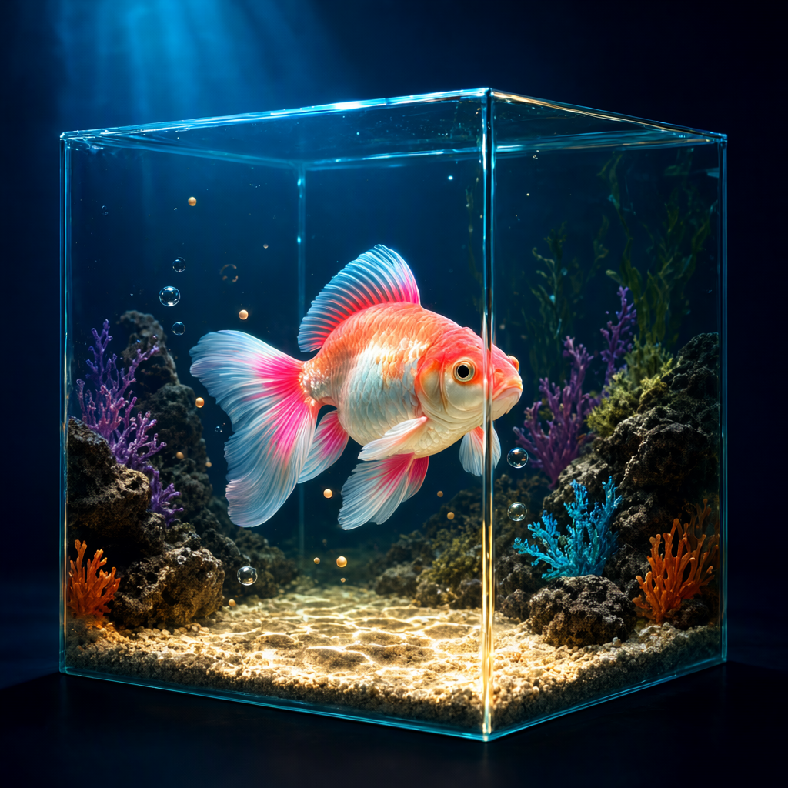

进度自动保存在本机。离开一段时间后小鱼会肚子饿、水会变脏——回来记得照顾它们。
转动视角：单指拖动环绕鱼缸，双指捏合缩放。右侧竖排按钮可一键切换 正面 / 俯瞰 / 侧面 / 水下 / 跟随 六种机位，切换是平滑运镜。
饲料瓶：点一下缸上方的饲料瓶把它拿起来，拖动到想投喂的位置，然后按住左下角 倾倒 按钮——瓶身会真的倾斜，里面的颗粒会滚向瓶口洒出来。也可以直接拖底部控制台的 倾倒角 滑杆。
喂食：颗粒入水后会缓慢下沉，小鱼发现后加速追食。沉底的饲料由螃蟹打扫。吃太多会拉便便，水质会下降。
玩耍 / 清洁：玩耍让鱼群冲刺并摆出编队；清洁换掉脏水、清走便便。三项状态都会随时间下降。
点小鱼：轻点任意一条鱼可以打开它的档案，改名、跟随、单独投喂。双击画面可对焦到最近的鱼。
底部控制台：光照、波纹、气泡、游速、辉光、水色、昼夜、网格、画质全部即时生效，左右滑动查看更多。
键盘（桌面）：F 喂食 · P 玩耍 · C 清洁 · 1–6 机位 · R 自动环绕 · 空格 倾倒。
立刻可用（推荐）：用 iPhone 的 Safari 打开本页面 → 点底部 分享 按钮 → 选 添加到主屏幕。桌面会出现独立图标，点开即全屏运行、离线可玩，和原生 App 体验一致。
原生 IPA：项目已附带 Capacitor iOS 工程。在任意一台 Mac 上执行 npm install → npx cap sync ios → npx cap open ios，在 Xcode 里选择你的开发者签名后 Product ▸ Archive 即可导出 .ipa 并安装到 iPhone。
为什么需要 Mac：Apple 规定 iOS 安装包必须用 Xcode 签名，这一步只能在 macOS 上完成。方式 A 不需要 Mac，现在就能装；没有 Mac 又想要 .ipa，可用 GitHub Actions 云编译（教程方法二）。

DEEP SEA PET MACHINE